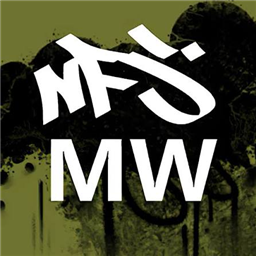
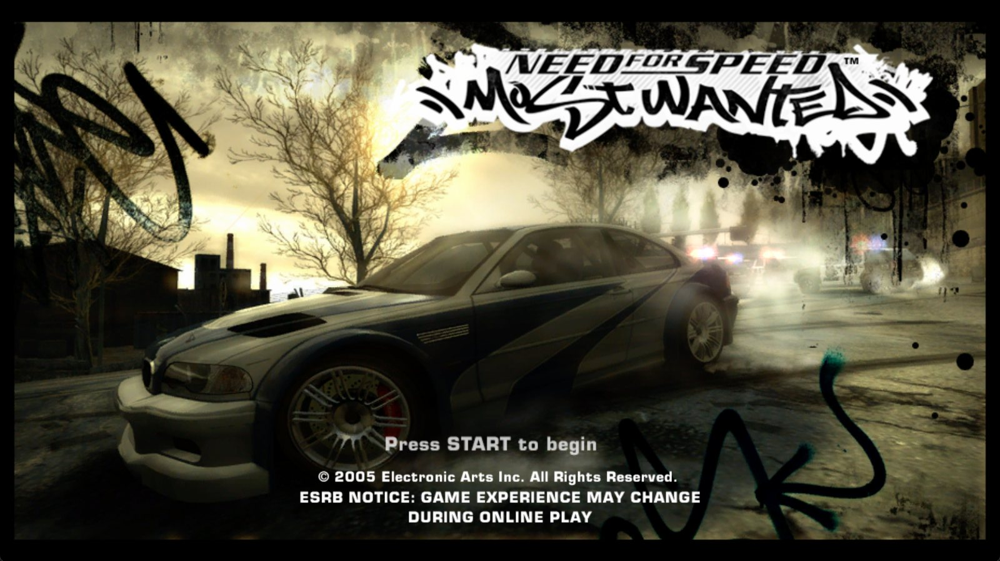
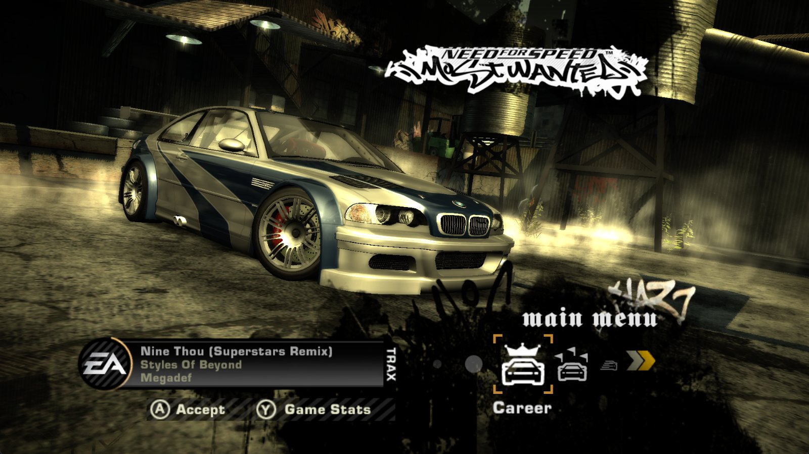
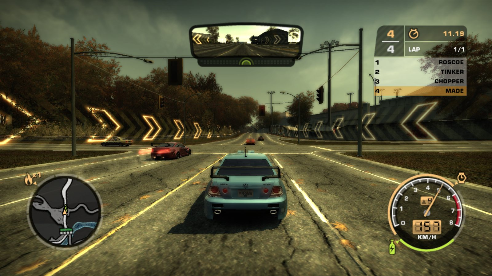
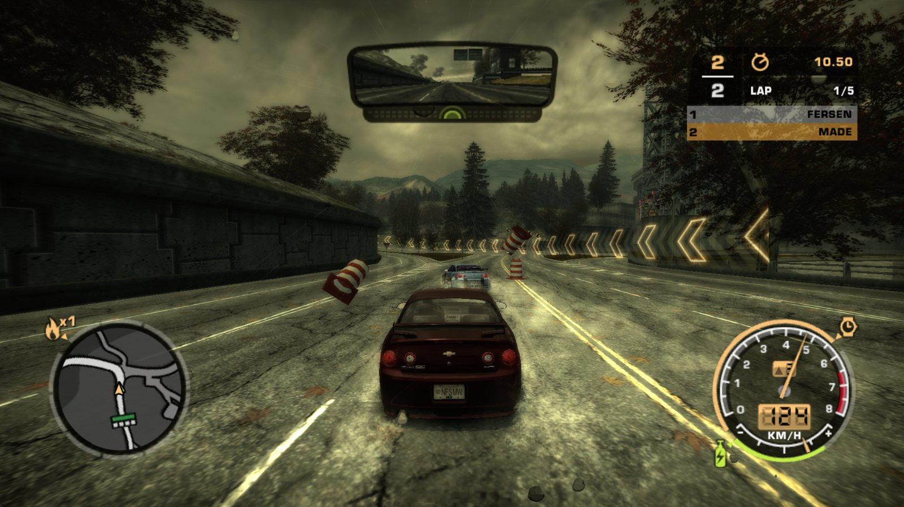

Código nativo
El código PowerPC del juego se traduce a C++ y se compila para tu PC. No es un emulador.

NFSMW RecompiledEl código PowerPC del juego se traduce a C++ y se compila para tu PC. No es un emulador.
Dibuja el juego directamente con Vulkan en lugar de emular la GPU de la Xbox 360: muchos más FPS.
Elige tu .iso o carpeta y el lanzador detecta la edición y abre el ejecutable correcto.
Perfiles Bajo a Ultra, resolución hasta la de tu pantalla, 30/60/120 FPS, sombras, reflejos, FXAA y valores originales de Xbox 360.
Asigna teclas y botones desde el lanzador. Compatible con volantes, pedales y vibración.
Exporta, importa y restaura tus partidas guardadas. Activa trucos desde un archivo de texto.




Descarga el .zip y extrae la carpeta completa donde quieras.
Es el único archivo que hay que abrir. El resto está en la carpeta data.
Selecciona tu .iso o la carpeta extraída del juego (PAL España o USA).
La primera vez se generan los shaders desde tu disco. Solo pasa una vez.
Si el antivirus bloquea el programa, es un falso positivo: los ejecutables aún no están firmados. Añade la carpeta como exclusión.
No. Necesitas tu propia copia del juego de Xbox 360. Este proyecto no incluye ni distribuye datos del juego.
No. El código del juego se traduce a C++ antes de compilar y se ejecuta como un programa nativo de Windows.
PAL España y USA. Cada región es un programa distinto; otras ediciones podrían llegar más adelante.
El lanzador avisa automáticamente cuando hay una versión nueva. También puedes seguir el Discord.